Home
| Search
| CTG
| RTL
| IDDE
| STL
Home
| Search
| CTG
| RTL
| IDDE
| STL
Last update Fri Apr 28 16:30:17 2006
|
Reference 1. Introducing Digital Mars C++ 2. Introducing the IDDE Part 2: Creating an Application with Digital Mars C++ 3. Starting a Project and Defining Workspaces 4. Generating an Application Framework 5. Defining Classes and Their Hierarchies 6. Editing Program Code 7. Adding Look and Feel with Resources 8. Testing an Application Part 3: Learning Digital Mars C++ by Example 9. Introduction to the Tutorial 10. Lesson 1: Create the DOS Application 11. Lesson 2: Generate an Application Framework 12. Lesson 3: Customize the Interface 13. Lesson 4: Add Messages with ClassExpress 14. Lesson 5: Add a Dialog Box with ClassExpress Part 4: More about Creating Programs 15. More about Projects and Workspaces 16. More about Project Build Settings 17. More about AppExpress 18. More about ClassExpress 19. Class Editor Reference 20. Hierarchy Editor Reference 21. Text Editor Reference 22. Using Version Control Part 5: More about Testing Programs 23. Controlling and Configuring the Debugger 24. Commands Available in Debugging Mode Part 6: About Managing Resources 25. ResourceStudio Resource Editor 26. Dialog Editor 27. Menu, Accelerator and String Table Editors 28. Bitmap, Cursor, Icon, and Font Editors 29. Version Information and Custom Resource Editors Part 7: Appendixes A. Expression Evaluation B. IDDE Settings and Command-Line Options C. Using NetBuild |
21. Text Editor ReferenceThis chapter describes commands and options available in the text editor, including global search functions, key binding options, and macro functions. For an introduction to text editing, see Chapter 6, Editing Program Code.The Source WindowTo open a Source window, you have several choices:
File menu commandsThe File menu (Figure 21-1) contains commands to open, save, and print files, as well as other useful file-related commands. Note that the Save and Add to Project command changes to Add to Project, Save and Parse, or Parse, depending on whether the file is part of the project, up to date, or parsed.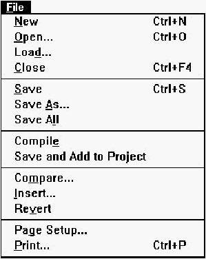 [Figure 21-1 File menu commands NewOpens a new, empty, and untitled Source window.OpenOpens a Windows File Open dialog box, then creates a new Source window containing the selected file. If the Open command is chosen from an untitled, unmodified Source window, the selected file is opened in that Source window.LoadOpens a Windows File Open dialog box, then loads the selected file into the current Source window. If there are unsaved changes in the previous file, you are asked if you would like to save the changes before loading the new file.CloseCloses the Source window. If there are unsaved changes, you are asked if you would like to save the changes before closing the file.SaveSaves the current buffer to disk. If the file is untitled, this command executes Save As.Save asSaves the current buffer using the Windows File Save As dialog box. This dialog box contains a check box— Add to Project, which lets you add the file to the current project.Save AllExecutes Save for every open Source window.CompileSaves the buffer and compiles the file.Save and Add to ProjectSaves the file to disk, adds the file to the project, and reparses all files in the project.The Save and Add to Project command changes to Add to Project, Save and Parse, or Parse, depending on whether the file is part of the project, up to date, or parsed. These are the four changes:
Add to ProjectAdds the file to the project and reparses all files in the project.Save and ParseSaves the file to disk and reparses all files in the project.ParseReparses all files in the project.CompareOpens the Compare Files dialog box (Figure 21-2), which lets you select two files to compare.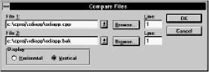 [Figure 21-2 Compare Files dialog box File 1 and File 2Specifies the files to be compared. You may type the file names, select names from the drop-down lists, or click on Browse to select files from standard Windows filename dialog boxes.If either file is open in a Source window, the editor uses the version in memory rather than the one in the disk file. LineSpecifies the line number at which the comparison starts.DisplaySpecifies the arrangement of the windows in which the two files are displayed:
InsertOpens an Insert File dialog box. The editor inserts the contents of the file you select at the current insertion point.RevertRereads the file from disk, abandoning any changes made since the last time it was saved.Page SetupOpens the Page Setup dialog box (Figure 21-5), which sets parameters for printing.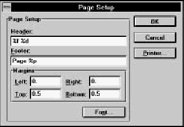 [Figure 21-5 Page Setup dialog box Header and footerThe header and footer are single lines of text displayed at the top and bottom (respectively) of each page of the printed output. To omit the header or footer, leave the textbox empty.You can embed the following special-purpose codes in the header and footer text:
MarginsSets the page margins. The units are the standard units of measurement used in your country (inches or centimeters), set in the Windows Control Panel.FontOpens a Windows Font dialog box, with which you select a typeface, style, and size for the printed output. The entire document, including headers and footers, is shown in the selected font.PrinterOpens a Windows Print Setup dialog box, with which you can set additional printing parameters.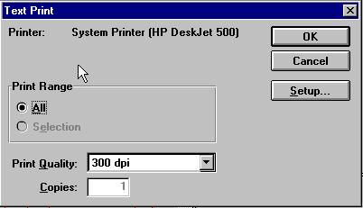 [Figure 21-6 Text Print dialog box Print rangeSpecifies whether the entire file or just the current text selection is printed:
Print qualityThis drop-down listbox specifies print quality. Options include the specified printer's output capabilities, expressed in dots per inch.CopiesSpecifies the number of copies to print.SetupOpens a Windows Print Setup dialog box, with which you can set additional printing parameters.Edit menu commandsThe Edit menu (Figure 21-7) contains standard edit and search commands, as well as commands to access text editor options.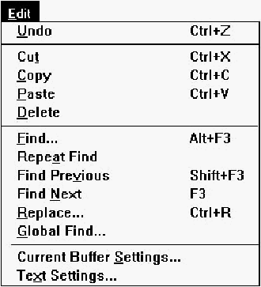 [Figure 21-7 Edit menu commands UndoReverses the last cut, paste, replace, or typed character. By repeatedly choosing this command, you can undo previous commands, up to the limit of the undo buffer.CutCopies the selected text to the Clipboard, then deletes it from the buffer.CopyCopies the selected text to the Clipboard.PasteInserts the text from the Clipboard at the insertion point.DeleteDeletes the selected text from the buffer.FindOpens the Find dialog box (Figure 21-8), used to search the file for specified text.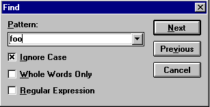 [Figure 21-8 Find dialog box PatternThis drop-down listbox contains the text to be found.You can initialize the pattern by selecting the text before choosing Find. (The text must not span a line break.) Otherwise, you may type the text you want to find into the textbox, or select text from previous search strings, stored in the drop-down listbox. The pattern may also be a regular expression (text containing wildcard characters) if the Regular Expression option is selected. Regular expression syntax is discussed in "Using Global Find," later in this chapter. Ignore caseIf this option is turned on, the search is not case sensitive.Whole words onlyIf this option is turned on, a string is considered a match only if it is not part of a larger alphanumeric string.Regular expressionThis option enables regular expression matching.The search begins at the current insertion point. Click Next to search forward in the file, or Previous to search backward in the file. If the search is successful, the matching text is highlighted. Otherwise, the status line displays the message "Pattern not found." Repeat FindContinues the search begun by Find. The search resumes from the current insertion point and proceeds in the direction previously specified.If the search is successful, the matching text is highlighted. Otherwise, the status line displays the message "Pattern not found." Find PreviousSearches backward from the current insertion point for the text to be found.Find NextSearches forward from the current insertion point for the text to be found.ReplaceOpens the Replace dialog box (Figure 21-9), which lets you find and replace occurrences of text with different text.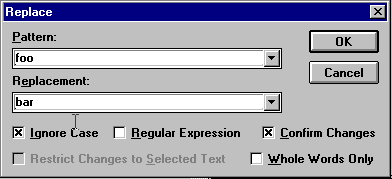 [Figure 21-9 Replace dialog box PatternThis drop-down listbox contains the text to be found and replaced.You can initialize the pattern by selecting text before choosing Replace. (The text must not span a line break.) Otherwise, you may type the text you want to find into the textbox, or select text from previous search strings, stored in the drop-down listbox. The pattern may also be a regular expression (text containing wildcard characters) if the Regular Expressions option is selected. Regular expression syntax is discussed in the section "Using Global Find," later in this chapter. ReplacementThis drop-down listbox contains the text with which you replace occurrences of Pattern. Type the replacement text into the textbox, or select text from previous replacement strings, stored in the drop-down listbox.Ignore caseIf this option is turned on, the search is not case sensitive.Regular expressionsEnables regular expression matching.Confirm changesCauses the text editor to request confirmation before each replacement. If this option is not selected, the editor replaces all occurrences of Pattern, starting at the current insertion point, without prompting you.Restrict changes to selected textInstructs the text editor to perform replacements only within the selected block of text.Whole words onlyIf selected, the text editor considers text a match only if it is not part of a larger alphanumeric string.The search/replace operation begins at the current insertion point. If you have selected Confirm Changes, the Confirm Replacement dialog box (Figure 21-10) is displayed when a match is found. 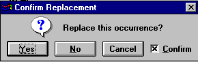 [Figure 21-10 Confirm Replacement dialog box You may click Yes to make the replacement, No to skip this replacement, or Cancel to end the search/replace operation. Also, if you uncheck Confirm, then click Yes, the editor replaces all remaining occurrences of Pattern without prompting you. Global FindOpens the Global Find dialog box. See "Using Global Find," later in this chapter.Current Buffer SettingsOpens the Current Buffer Options dialog box (Figure 21-11), with which you can change editing options for the current Source window.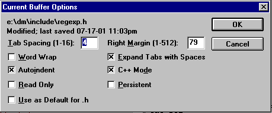 [Figure 21-11 Current Buffer Options dialog box Tab spacingSpecifies the number of columns between tab stops.Right marginSpecifies the column that acts as the right margin.Word wrapEnables word wrap. While typing, lines extending beyond the right margin are broken automatically at the last word boundary before the margin.AutoindentEnables automatic indentation on newline. When you press Enter, the editor positions the cursor directly below the first nonblank character in the previous line.Read onlySets the read-only flag on the buffer, so the buffer may not be changed.Use as default for ...Saves the Current Buffer Options settings so they become the defaults for any subsequent file with the same file extension that is loaded. For example, if the file that is currently open is "test. cpp," the check box reads, "Use as default for .cpp." If this is an untitled buffer, the check box is disabled.Expand tabs with spacesTabs are inserted into the text as an appropriate number of spaces rather than as tab characters.C++ modeThe buffer is treated as C++ code. Special options for C++ code are set in the Editing/Browsing Settings dialog box.PersistentCauses the buffer options for this file to be saved during the current IDDE session, even if the file is closed. Otherwise, buffer options are set to their global defaults if a file is closed and reopened.Text SettingOpens the Editing/Browsing Settings dialog box, in which you set global text editing options. Details of this dialog box are discussed in the "Text Settings" section later in this chapter.Goto menu commandsThe Goto menu (Figure 21-12) contains commands to move within the source file.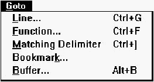 [Figure 21-12 Goto menu commands LineOpens the Goto Line dialog box (Figure 21-13). Type the line number and click OK, and the insertion point is moved to the specified line.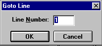 [Figure 21-13 Goto Line dialog box FunctionOpens the Goto Function dialog box (Figure 21-14).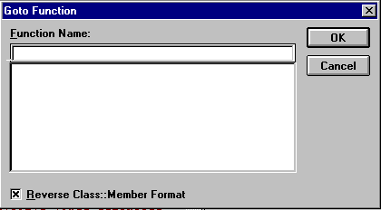 [Figure 21-14 Goto Function dialog box The Function Name listbox holds the available function names. Either type in the function name or scroll and select the function name from the list. When you click OK, the insertion point moves to the beginning of the specified function. Member functions in the list typically are displayed as member::class. To change the format to class::member, deselect the Reverse Class::Member Format option. Matching DelimiterFinds the delimiter that matches the one to the right of the current insertion point. The insertion point is moved to the front of the matching delimiter. This command can find matching parentheses, square brackets, or braces.BookmarkOpens the Bookmarks dialog box (Figure 21-15), which you can use to set and move to as many as ten different locations in your source files. Bookmarks are saved through the current IDDE session only.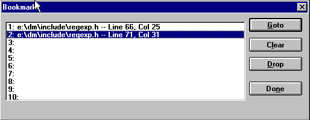 [Figure 21-15 Bookmarks dialog box Bookmark listShows the locations of the ten bookmarks by file, line, and column. Click on an entry to select it; double-click on an entry to go to it.GotoMoves the insertion point to the selected bookmark. This command opens a file if it is not already open. You can also double-click on the bookmark in the list.ClearRemoves the selected bookmark.DropSets the selected bookmark to the current insertion point. The entry in the bookmark list is updated to show the file, line, and column.BufferOpens the Edit Buffers dialog box (Figure 21-16). This dialog box presents a list of files currently open in Source windows; it allows you to view and change each buffer's editing options and to perform various file-related operations.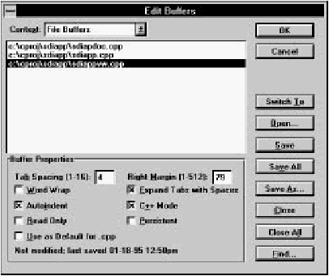 [Figure 21-16 Edit Buffers dialog box ContextThis drop-down listbox specifies File Buffers or Member Buffers. File Buffers are Source windows open to edit an entire file. Member Buffers are Class Editor Source panes and Hierarchy Editor Source child windows, open to edit a particular member definition.Buffer listContains the names of files currently open in Source windows (or, if the Member Buffers context is selected, the names of member functions open in Class Editor Source panes and Hierarchy Editor Source child windows). Click on a filename to select it; double-click on it to bring the corresponding Source window to the front.Buffer propertiesLets you view and set options for each individual buffer listed in the buffer list.
Switch toBrings the Source window containing the file selected in the listbox to the front.OpenOpens a Windows File Open dialog box, with which you can select a file to open for editing.SaveSaves the file selected in the listbox. If the file is untitled, this command executes Save As.Save allSaves all files in the listbox.Save asOpens a Windows File Save As dialog box, with which you can save the file selected in the listbox under a new name.CloseCloses the file selected in the listbox.Close allCloses all files in the listbox.FindOpens the Global Find dialog box (see "Using Global Find," later in this chapter).Macro menu commandsThe Macro menu (Figure 21-17) allows you to record, play, and edit macros.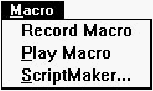 [Figure 21-17 Macro menu commands Record MacroStarts the recording of the default macro. While a macro is being recorded, this menu choice is replaced in the menu by Stop Recording. Menu and keystroke recording is limited to the current source window only. To record a macro:
Play MacroPlays back the default macro.ScriptMakerOpens the ScriptMaker dialog box (Figure 21-18), with which you copy, name, and edit macros.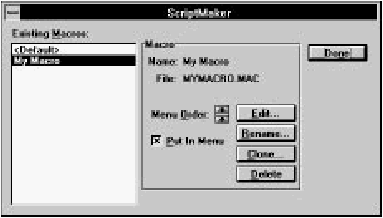 [Figure 21-18 ScriptMaker dialog box Existing macrosThis is the list of macros. Click on a macro to select it; double-click on the macro to edit it.Menu orderThese buttons allow you to change the order of the macros listed in the Macro menu. Click on the Up Arrow to move the selected macro up in the menu; click on the Down Arrow to move it down in the menu. The default macro always remains at the top of the list.Put in menuCauses the selected macro to be listed in the Macro menu.EditOpens the Macro Editor window. For information about the macro language and the Macro Editor window, see the Digital Mars C++ IDDE Help.RenameOpens the Rename/Clone Script dialog box (Figure 21-19), with which you can change the selected macro's menu name or filename.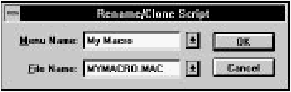 [Figure 21-19 Rename/Clone Script dialog box
CloneThis button opens the Rename/Clone Script dialog box. This command makes a copy of the selected macro.
DeleteDeletes the selected macro.New! commandOpens another Source window on the current file.Changes made to a file in one Source window are made automatically in other Source windows containing the same file. Pop-up menu commandsThe pop-up menu (Figure 21-20) is opened by clicking the right mouse button in the edit area of the Source window.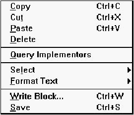 [Figure 21-20 Source window pop-up menu commands CopyCopies the selected text to the Clipboard.CutCopies the selected text to the Clipboard, then deletes it from the buffer.PasteInserts the text from the Clipboard at the insertion point.DeleteDeletes the selected text from the buffer.Query ImplementorsInterprets the tokens or symbols surrounding the insertion point as a C++ class member name and locates all classes with a member of this name. The results are displayed in the Members window (Figure 21-21).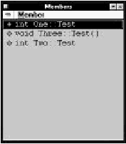 [Figure 21-21 Members window For example, if the token is Test, Query Implementors shows a list of all implementors of Test, such as One::Test. In the Members window, you can select an implementor and choose Show Source from the Member menu to open a Source window to the corresponding source code or, double-click an implementor to open a Class Editor window to the member source. Note that if only one implementor of a token is found, the Query Implementors command opens the Class Editor window directly, without first opening the Members window. SelectOpens the Select submenu (Figure 21-22).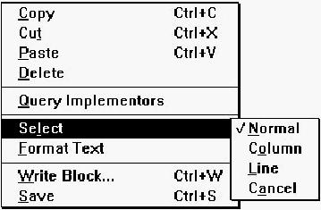 [Figure 21-22 Select submenu commands NormalRestores the original text select block to normal mode, undoing changes caused by Column and Line (see the following).ColumnChanges the text selection block to a column-oriented select block, in which only the characters in the columns between the start and end of the original text block are selected.LineChanges the text selection block to a line-oriented select block, in which all characters in the lines between the start and end of the original text block are selected.CancelDeselects the current select block.Format TextOpens the Format Text submenu (Figure 21-23).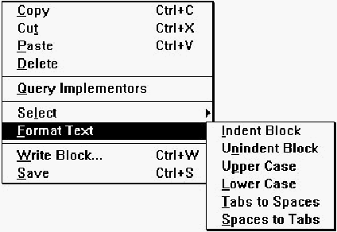 [Figure 21-23 Format Text submenu commands Indent BlockIndents all nonblank lines in the selected text by one tab stop. Tabs are inserted as tab characters or as spaces, depending on the current buffer option settings. All text in a region will be indented if a region is selected upon issuing the command.Unindent BlockUnindents all lines in the selected text by one tab stop. All text in a region will be unindented if a region is selected upon issuing the command.Upper CaseChanges all alphabetic characters in the selected text to uppercase.Lower CaseChanges all alphabetic characters in the selected text to lowercase.Tabs to SpacesChanges all tab characters in the selected text to spaces. The number of spaces used to replace each tab character depends on the Tab spacing option.Spaces to TabsChanges spaces in the selected text to tab characters. The number of spaces used to create each tab character depends on the Tab spacing option.Write BlockOpens a Write Block dialog box. Select a file or type a new name; the editor writes the currently selected text block to this file. To append the selection block to a file, check Append.SaveSaves the current buffer to disk. If the file is untitled, this command executes Save As.Toolbar commandsThe Source window toolbar (Figure 21-24) offers quick access to several menu choices.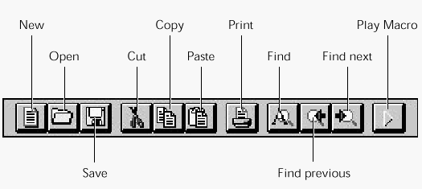 [Figure 21-24 Source window toolbar
Text SettingsChoosing Text Settings from the Source window's Edit menu opens the Editing/Browsing Settings dialog box, a workspace with tabs along the top margin. The tabs are used to switch between several sets of options. Each set of options is described below.General optionsThe General options set (Figure 21-25) contains options for undo levels and the key binding file, as well as some options related to the Class and Hierarchy Editors.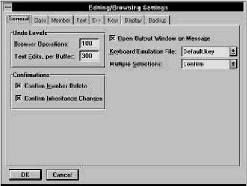 [Figure 21-25 General options Browser operationsSpecifies the number of operations that can be undone in the Class and Hierarchy Editors. See Chapter 19, Class Editor Reference, and Chapter 20, Hierarchy Editor Reference.Text edits, per bufferSpecifies the number of edit operations that can be undone per buffer.ConfirmationsEnables confirmation requests for various operations in the Class and Hierarchy Editors. See Chapter 19, Class Editor Reference, and Chapter 20, Hierarchy Editor Reference.Open output window on messageLets the IDDE open an error window whenever there is an error of any kind (during compilation, during parsing, and so on.)Keyboard emulation fileSpecifies the key bindings set to be used. Key bindings allow you to associate keystroke sequences with functions and macros. Information about key bindings sets can be found in the Digital Mars C++ IDDE Help.Multiple selectionsEnables multiple selections in lists in the Class and Hierarchy editors. See Chapter 19, Class Editor Reference, and Chapter 20, Hierarchy Editor Reference.Text optionsThe Text options set (Figure 21-26) contains options for indentation, cursor styles, keyboard emulation, and text editor font.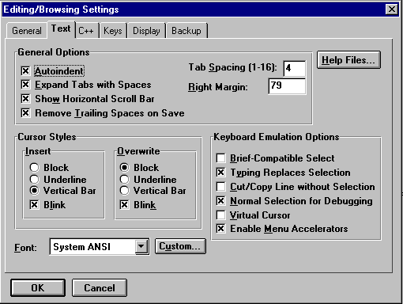 [Figure 21-26 Text options Tab spacingSpecifies the default for the number of columns between tab stops. This value may be overridden locally in each buffer.Right marginSpecifies the default for the column that acts as the right margin. This value may be overridden locally in each buffer.AutoindentIndents automatically on newline. When you press Enter, the editor positions the cursor directly below the first nonblank character in the previous line. This option may be overridden locally in each buffer.Expand tabs with spacesTabs are inserted into the text as an appropriate number of spaces, rather than as tab characters. This option may be overridden locally in each buffer.Show horizontal scroll barEnables the horizontal scroll bar at the bottom of the Source window.Remove trailing spaces on saveTrailing spaces and Tabs are removed from the end of each line when a file is saved.Cursor stylesSpecifies caret style. You may set styles individually for the caret in Insert and Overwrite modes. Styles are:
FontSpecifies the text font. You can select a predefined font from the drop-down list, or you can click Custom and select any installed font from a Windows Font dialog box.Brief-compatible selectIf you choose this option, then enter the "Toggle Mode Select" mode. The editor remains in selection mode when you use the arrow keys.Typing replaces selectionEnables the Windows standard convention of replacing selected text with any typed character or pasted text. If this option is not selected, typing or pasting inserts the text to the left of the current selection.Cut/copy line without selectionIf no text is selected, Cut and Copy, respectively, cut and copy the current line. If text is selected, Cut and Copy work as usual.If this option is not selected, Cut and Copy have no effect if no text is selected. Normal selection for debuggingEnables normal selection of text when in debugging mode. If disabled, you can drag from the source window to the Assembly, Data/Object, and Function windows while debugging.Virtual cursorEnables virtual cursor mode, in which you can position the caret anywhere in the window, regardless of line endings. Note that even with this option enabled, you still cannot position the caret beyond the last line in the file.Enable menu acceleratorsEnables menu accelerator keys. With this option selected, new windows have underscores beneath the top-level menu items to show the Alt key combination you can use to access the menu.Help FilesClicking on Help Files opens the Text Help File Configuration dialog box, as shown in Figure 21-27.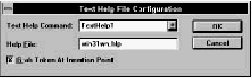 [Figure 21-27 Text Help File Configuration dialog box This dialog box lets you associate particular Windows Help files with each of the four Text Help commands. The Text Help commands are run by key sequences such as Shift+F1. (The exact mapping of key sequences to Text Help commands depends on the current key mapping. See "Keys options," later in this chapter.) The Text Help commands call the Windows API function Windows Help, passing it the name of a Windows Help file and (optionally) a keyword. The Text Help commands are useful, for example, for gaining access to help on a particular API function or MFC class directly from the source code.
C++ optionsThe C++ options set (Figure 21-28) contains options to check delimiters, indent after braces, and auto-align comments. It also allows you to add custom keywords to the keyword dictionary.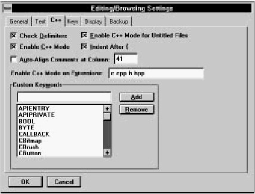 [Figure 21-28 C++ options Check delimitersIf you type a right parenthesis, square bracket, or brace, the editor briefly highlights the corresponding left delimiter. If no matching delimiter is found, an error message is displayed.Enable C++ modeThis option enables C++ mode globally. If it is not selected, C++ mode features are disabled for all buffers, regardless of local buffer option settings.Enable C++ mode for untitled filesWhen this option is on, new files that have not yet been given a name are assumed to be C/C++ source. This box should be checked in most circumstances, so that keywords can be recognized in new files, for example.Indent after {If the last character typed on a line is a left brace, the next line is indented automatically by an extra tab stop. This option works only if Autoindent is enabled in the buffer. Also, if the first character on a line is a right brace (}), the line is unindented automatically; this is independent of the Autoindent option.Auto-align comments at columnIf this option is enabled, when you type // to start a C++ comment, the editor automatically indents the comment to a specified alignment column. You can specify the alignment column in the adjacent textbox.Enable C++ mode on extensionsSpecifies the file extensions for which C++ mode is automatically enabled. Type the extensions into the textbox, separated by spaces.Custom keywordsYou can maintain a set of custom keywords that are highlighted in the edit window in a manner you specify (see "Display options," later in this chapter).To add a new keyword, type the keyword into the textbox and click on Add. To remove a keyword from the list, click on the keyword in the list and click on Remove. Keys optionsThe Keys options set (Figure 21-29) lets you customize key bindings and assign key combinations to macros.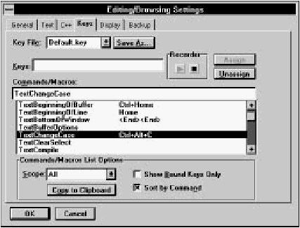 [Figure 21-29 Keys options A Key Bindings file (.key) associates keystroke sequences with editor commands and user-defined macros. You can select the particular key binding set you want to use either with the Key File option below, or with the Keyboard Emulation file option under the General tab (see General options, earlier in this section). Commands are grouped into functional categories. The groups are:
Key fileSpecifies the key bindings set to be used. Select a keyboard emulation file from the drop-down list.KeysSpecifies a key sequence. This is not an ordinary textbox; it can display any keystroke sequence.There are two ways to enter a keystroke sequence into the textbox:
Commands/macrosThe textbox displays the currently selected command (or macro). You can type in the command name or select a command from the list by clicking on it.The list displays commands and associated key sequences. If more than one sequence is assigned to a command, it is listed as many times as necessary. The content and sorting of the list is determined by the Commands/Macros List Options. Commands/macros list optionsDetermine the filtering and sorting of commands and macros shown in the Commands/Macros list.
AssignAssigns the keystroke sequence to the selected command.If another command in the same functional category is already bound to this keystroke sequence, you are asked if you want to reassign the sequence to the new command. UnassignDissociates the selected command from its keystroke sequence.Save asSaves the key bindings to a new file. When prompted, type the name of the new file, or select a file from the drop-down list.Display optionsThe Display options set (Figure 21-30) lets you select special font colors and styles for keywords, comments, preprocessor symbols, and other special text.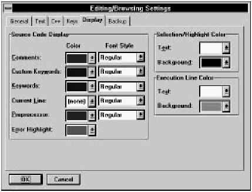 [Figure 21-30 Display options Source code displayAllows you to customize syntax highlighting. You can specify the highlighting for:
Selection/highlight colorSpecifies the text and background color of selected text.Execution line colorSpecifies the text and background color of the current execution line during debugging.Backup optionsThe Backup options set (Figure 21-31) contains options for backing up files.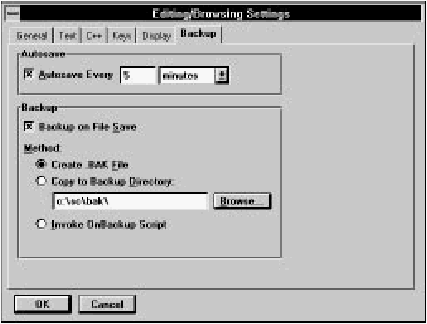 [Figure 21-31 Backup options AutosaveCauses the editor to save your work automatically after a certain number of changes, or after a certain number of minutes since the last save. Specify the number of changes or minutes in the textbox, and select changes or minutes from the drop-down list.Backup on file saveThis enables automatic backup on save. You must also select the backup method:
Using Global FindGlobal Find is a multi-file search facility. You specify the files to be searched and the string or regular expression to be searched for. Global Find presents a list of files in which a match was found and allows you to view and edit the files, add files to the project, or refine the search criteria and search again.Defining the searchYou open the Global Find dialog box (Figure 21-32) by choosing Global Find from a Source window's Edit menu, choosing Global Find from the IDDE's Tools menu, or clicking on the Find button in the Edit Buffers dialog box.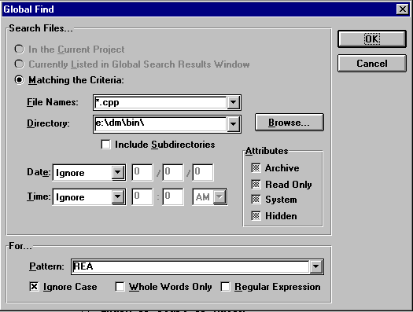 [Figure 21-32 Global Find dialog box The Global Find dialog box has two sections. The upper section specifies the files to be searched, and the lower section specifies the pattern to be searched for. Search Files...Three options are available for specifying the files to be searched.
For...Type the pattern to search for into the textbox. These options modify the search:
The Search windowAfter specifying the search criteria, click OK to start the search. As the search begins, the editor opens the Search window (Figure 21-33). This window contains a list of files in which a match is found.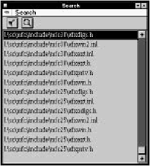 [Figure 21-33 Search window Also during the search, the Search Progress dialog box displays statistics (Figure 21-34). Click Stop to terminate the search at the current point, or click Revert to return to the Global Find dialog box. 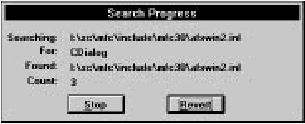 [Figure 21-34 Search Progress dialog box When the search is complete, the Search Progress dialog box closes and the Search window contains a list of files in which at least one match occurred. Search menu commandsThe Search window's Search menu (Figure 21-35) contains commands to open files in Source windows, add files to the project, and continue the global search.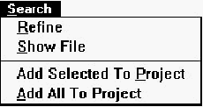 [Figure 21-35 Search menu commands
Toolbar commandsThe Search window toolbar (Figure 21-36) offers quick access to menu choices.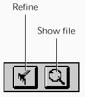 [Figure 21-36 Search window toolbar
|